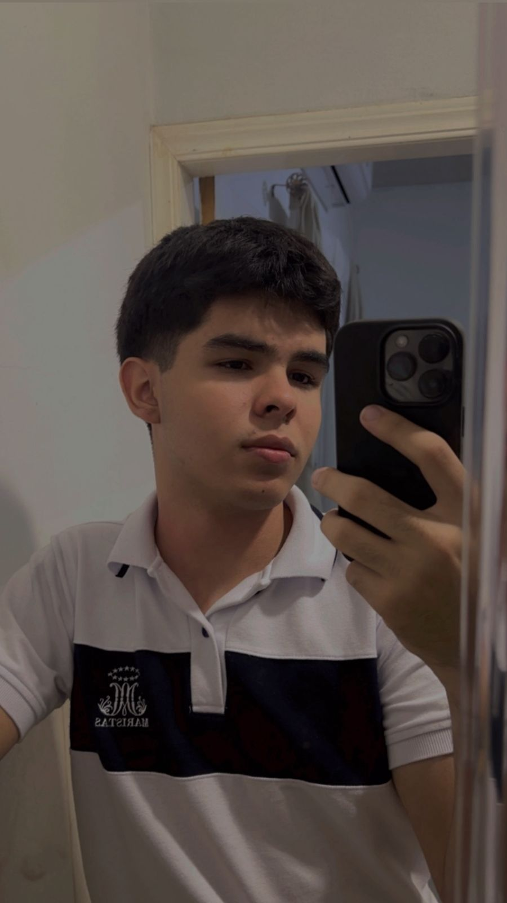

Portafolio de Viajes Carlos Zelaya |
||
| Inicio | Mis Viajes | Contacto |
Te cuento sobre mi... |
|
|  | ||
Soy un adolescente que actualmente cursa 12 BTP en Informática, una etapa que me ha permitido fortalecer mis conocimientos en el área de la tecnología y descubrir que quiero seguir creciendo profesionalmente en este campo. Me considero una persona sociable, responsable y con ganas de superarme cada día. |
Para mí, esos viajes son mucho más que solo conocer nuevos lugares; son oportunidades para convivir, reír, apoyarnos y fortalecer nuestros lazos familiares. |
By Carlos Zelaya |